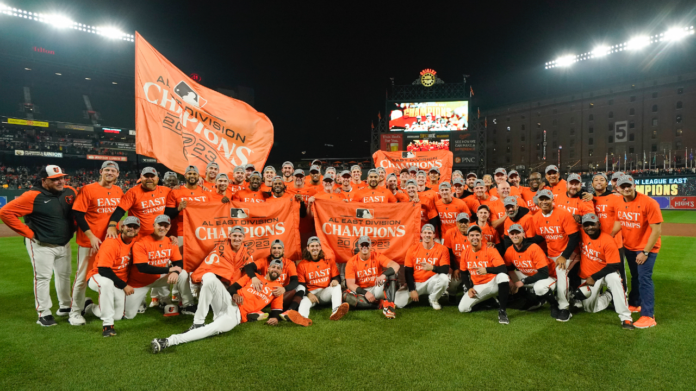
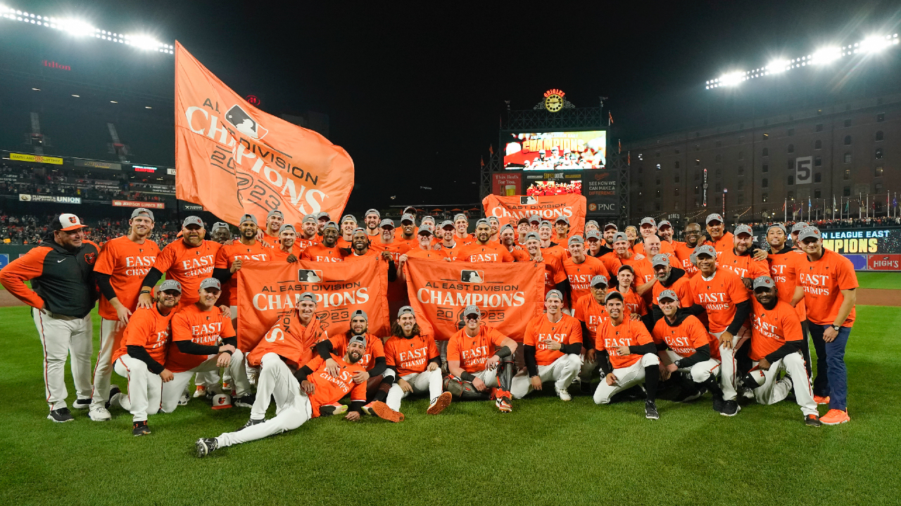

The Baltimore Orioles (also known as the O's) are an American professional baseball team based in Baltimore. The Orioles compete in Major League Baseball (MLB) as a member of the American League (AL) East division. As one of the American League's eight charter teams in 1901, the franchise spent its first year as a major league club in Milwaukee as the Milwaukee Brewers before moving to St. Louis to become the St. Louis Browns in 1902. After 52 years in St. Louis, the franchise was purchased in 1953 by a syndicate of Baltimore business and civic interests led by attorney and civic activist Clarence Miles and Mayor Thomas D'Alesandro Jr. The team's current owner is American trial lawyer Peter Angelos(just got sold #WESTAYININBMORE). The Orioles' home ballpark is Oriole Park at Camden Yards, which opened in 1992 in downtown Baltimore.[4][5]
 

Despite the 2016 season being another above .500 season for the Orioles; they would fail to win their division, but were able to secure a Wild card spot. However, they would lose against the Toronto Blue Jays in the AL Wild Card game in Toronto. This was the last postseason appearance for Baltimore until 2023. In 2017, the Orioles started with a modest 22–10 record. Despite early season success, the Orioles suffered their first losing season since 2011. The Orioles would suffer one of Major League Baseball's worst seasons in 2018, en route to going 47–115. 2018 proved to be general manager Duquette and Showalter's final season in Baltimore, as their contracts were not renewed after the season.
In April 2023, the Orioles went 19–9, setting a franchise record for wins in the month of April.[31] By August 2023, the Orioles, led by a core of first-and-second-year players Adley Rutschman, Gunnar Henderson,Félix Bautista and Kyle Bradish, were in first place in the division and described in The Athletic as "young, fun and arguably the best story in baseball." However, the front office went under scrutiny when it was reported that play-by-play announcer Kevin Brown had been suspended indefinitely by the Orioles for his pregame remarks on MASN, the team-owned network, two weeks earlier. During a "seemingly benign" introduction to a series against the Tampa Bay Rays, Brown observed that the team had struggled to win a series in Tampa in the past several seasons. It was described in The Athletic as a "petty" move by John Angelos, "the only person [in the organization] with enough power that no one dare question the validity of anything he says and does, no matter how foolish it is."[32] Several broadcasters came to Brown's defense after the news broke. Gary Cohen said the team had "draped itself in utter humiliation" and Michael Kay said the suspension made "the Orioles look so small and insignificant and minor league."[33] Brown returned to broadcasting for the team and stated in a public message that "recent media reports [had] mischaracterized my relationship with my adopted hometown Orioles" and that his relationship with the team was "wonderful".[34]
The Orioles have a minor regional rivalry[80] with the nearby Washington Nationals nicknamed the Beltway Series or Battle of the Beltways. Baltimore currently leads the series with a 55–39 record over the Nationals. They have had divisional rivals within the American League East, predominately with the New York Yankees[81] in the past and in more recent years with the Toronto Blue Jays.[82]
For 23 years, Rex Barney was the PA announcer for the Orioles. His voice became a fixture of both Memorial Stadium and Camden Yards, and his expression "Give that fan a contract", uttered whenever a fan caught a foul ball, was one of his trademarks – the other being his distinct "Thank Yooooou ..." following every announcement. (He was also known on occasion to say "Give that fan an error" after a dropped foul ball.) Barney died on August 12, 1997, and in his honor that night's game at Camden Yards against the Oakland Athletics was held without a public–address announcer.[63] Barney was replaced as Camden Yards' PA announcer by Dave McGowan, who held the position until December 2011. Lifelong Orioles fan and former MLB Fan Cave resident Ryan Wagner soon took over as the PA announcer. He was chosen out of a field of more than 670 applicants in the 2011–12 offseason.[64] As of the 2022 season, Adrienne Roberson is the current Orioles PA announcer.